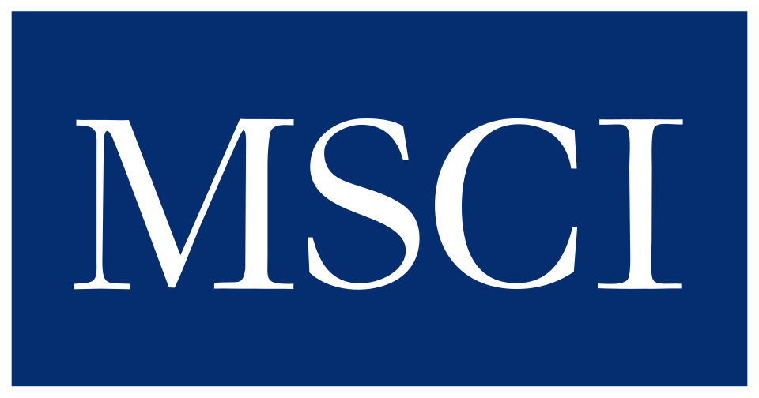

MSCI
MSCI(MSCI)는 주식·채권·헤지펀드 관련 지수와 주식 포트폴리오 분석 도구를 제공하는 미국 기업이다.
최종 업데이트

MSCI는 어떤 브랜드인가
MSCI는 국제 자본시장을 대상으로 주식, 채권, 헤지펀드 관련 지수와 포트폴리오 분석 도구를 제공한다. 대표 지수는 MSCI World와 MSCI EAFE이며, 국제 주식 포트폴리오의 성과를 측정하는 벤치마크로 활용한다.
지수는 인덱스 펀드와 상장지수 펀드 같은 소극적 투자 상품의 근간을 구성한다. MSCI 한국지수를 포함한 지수에 대해 정기 리뷰와 리밸런싱을 실시한다.
본사는 뉴욕이며 유럽, 아시아, 중동, 오세아니아와 미주 여러 도시에 지사를 운영한다.
MSCI는 어떻게 시작되고 성장했나
MSCI의 설립 시점은 미국에서 출발한 1969년이다. 국제 및 세계 자본 지수 산출은 1970년부터 시작했다.
이들 지수는 국제 주식 포트폴리오의 성과를 측정하는 벤치마크로 활용 범위를 넓혔으며, 인덱스 펀드와 상장지수 펀드의 기반도 구성했다. 2004년에는 Morgan Stanley Capital International이 Barra Inc.를 인수했으며, 이후 MSCI Inc.
또는 MSCI Barra라는 명칭을 사용했다.
MSCI의 브랜드 아이덴티티는 무엇인가
국제 주식 포트폴리오의 성과 측정과 소극적 투자 상품 구성에 함께 활용하는 시장 지수 체계가 구분점이다.
MSCI의 대표 제품과 서비스는 무엇인가
MSCI의 주요 상품은 국제 및 세계 자본시장을 다루는 주식 지수이며, 대표 지수로 MSCI World와 MSCI EAFE를 제공한다. 채권과 헤지펀드 관련 지수도 제공하고, 투자자가 주식 포트폴리오를 분석할 수 있는 도구도 운영한다.
MSCI 지수는 국제 주식 포트폴리오의 성과를 비교하는 벤치마크 역할을 한다. 또한 인덱스 펀드와 상장지수 펀드 같은 소극적 투자 상품의 구성 기반으로 활용하며, 정기 리뷰를 통해 지수를 리밸런싱한다.
MSCI는 지금 어떤 상태인가
MSCI의 본사는 뉴욕이며 제네바, 런던, 뭄바이, 홍콩, 파리, 도쿄, 상파울루, 두바이, 시드니, 프랑크푸르트, 밀라노, 버클리와 샌프란시스코에 지사를 운영한다. 최대주주는 Morgan Stanley이며 The Capital Group Companies가 소액주주로 참여한다.
자회사로 ISS Corporate Services를 운영한다.
MSCI 로고는 어떻게 변해왔나
자주 묻는 질문
MSCI는 어느 나라 브랜드인가요?
MSCI는 미국의 금융 브랜드입니다.
MSCI는 언제 설립되었나요?
MSCI는 1969년 설립되었습니다.
MSCI의 브랜드 아이덴티티는 무엇인가요?
국제 주식 포트폴리오의 성과 측정과 소극적 투자 상품 구성에 함께 활용하는 시장 지수 체계가 구분점이다.
MSCI의 대표 제품은 무엇인가요?
MSCI의 주요 상품은 국제 및 세계 자본시장을 다루는 주식 지수이며, 대표 지수로 MSCI World와 MSCI EAFE를 제공한다.
MSCI는 현재 어떤 상태인가요?
MSCI의 본사는 뉴욕이며 제네바, 런던, 뭄바이, 홍콩, 파리, 도쿄, 상파울루, 두바이, 시드니, 프랑크푸르트, 밀라노, 버클리와 샌프란시스코에 지사를 운영한다.
MSCI의 본사는 어디에 있나요?
MSCI의 본사는 뉴욕에 있습니다(위키데이터 기준).
MSCI의 공식 웹사이트는 어디인가요?
MSCI의 공식 웹사이트는 https://www.msci.com 입니다.
출처와 검증
MSCI 관련 참고: 공식 웹사이트 · 위키데이터 Q768773 · 한국어 위키백과 · 영어 위키백과. 브랜드명은 한글과 원어를 함께 표기하되 데이터에 없는 표기는 만들지 않습니다. 기원 국가·설립연도는 검수된 정의문에서 확인된 값을 우선하고, 없을 때만 공식 웹사이트 URL이 일치하는 위키데이터 개체의 값을 씁니다. 위키데이터 값은 2026-09-12 기준입니다.